Turn company knowledge into grounded deliverables.
Donna builds a structured, searchable knowledge layer from existing documents, then helps agents regenerate Markdown deliverables from memory, context and templates.
Local-first by design. Source-grounded by default. Flexible across OpenAI, Anthropic, OpenAI-compatible endpoints and local models.
Regulated environments
Donna is designed to run without third-party desktop clients such as Claude Desktop or similar applications, which are often not approved in regulated organizations. It can operate locally or on controlled infrastructure, helping teams align with ANSSI security expectations and DINUM sovereign digital tooling principles.
RGAA-mindedDSFR-inspiredOn-premise readySovereign AI compatibleMCP tools — local or remote
Four scattered documents. One sourced note. Eleven minutes.
Captured screen by screen in the demo workspace. The fictional Orion support project has four documents — a project brief, a vendor comparison, security requirements and an open-source review — and a review meeting coming up. The team needs one note that says what is known, what is missing, and where every line comes from.
4
source documents in
7
concepts in 5 families
13
evidence chains, frozen
11min
16:34 → 16:45, ~28k tokens
01Drop
Drop the documents in.
Four files land in Pending: a project brief, a vendor comparison, security requirements and an open-source review. Markdown is written as-is; PDF and text are converted by the documents agent. Nothing is indexed yet — the inbox only shows what is waiting.
1Pending inbox — four documents waiting to be ingested
2Drop zone: Markdown kept as-is, PDF and text converted
3One click — or /wiki-ingest — starts ingestion
Donna · demo workspace · 16:34
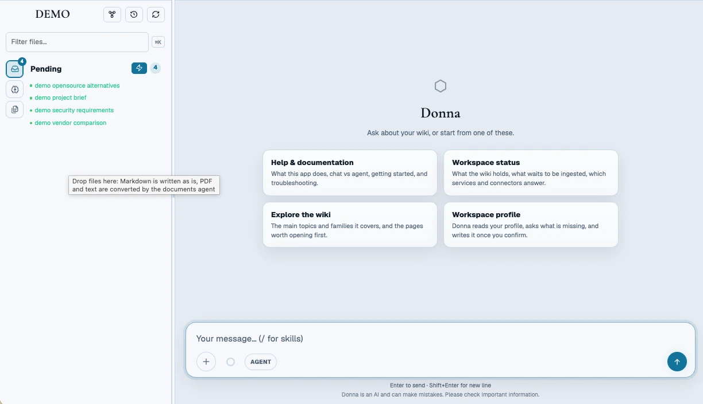
123
02Ingest
Ask for the ingest. Approve before anything changes.
/wiki-ingest compiles a plan. Because it writes to the wiki, it waits: nothing runs before you approve. Once approved, the orchestrator delegates to the production agent, and the Activity panel shows the run live — files, parallel model calls, tokens.
1Mutating task held until you approve or reject
2Said plainly in the chat: nothing runs before approval
1Live run: 4 files, up to 4 model calls at once, token count
2Delegated to the production agent, in a workspace-locked run
3Inspect or cancel at any time
Donna · demo workspace · 16:38
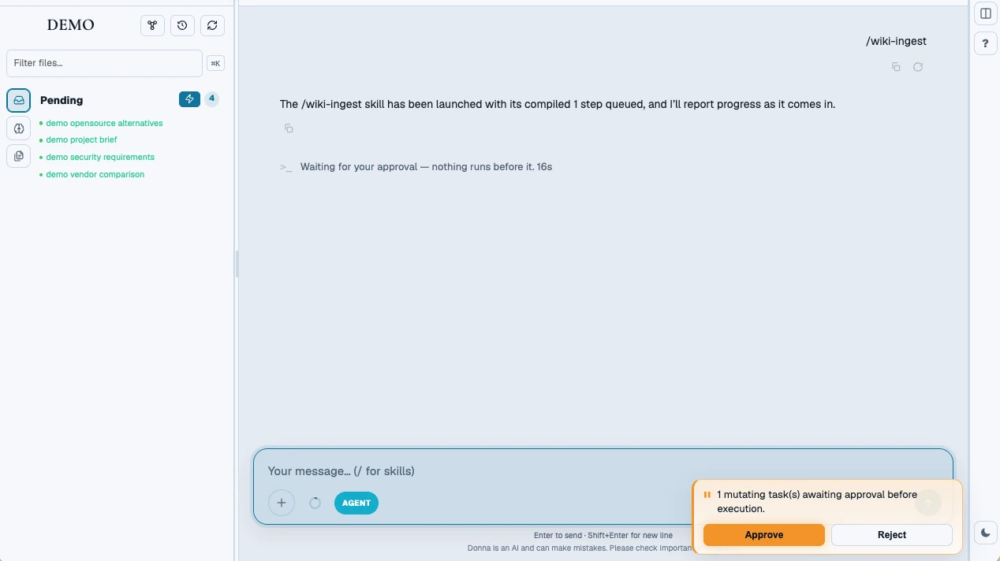
12
Donna · demo workspace · 16:38
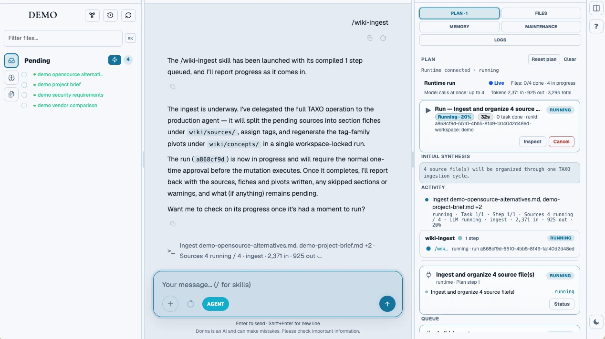
123
03Organize
The wiki organizes itself — and says what it couldn't check.
The four sources become reading notes, then concept pages grouped by family. Every entry on a concept page links back to the file it came from. When the run ends, Donna reports what it could and could not verify instead of claiming success.
1Project knowledge: concept pages grouped by family
2Reading notes: one per source document
3Run report: finished, but one result could not be checked
1The Orion concept, generated from the sources
2Every entry cites its file: [src: wiki/sources/…]
Donna · demo workspace · 16:38
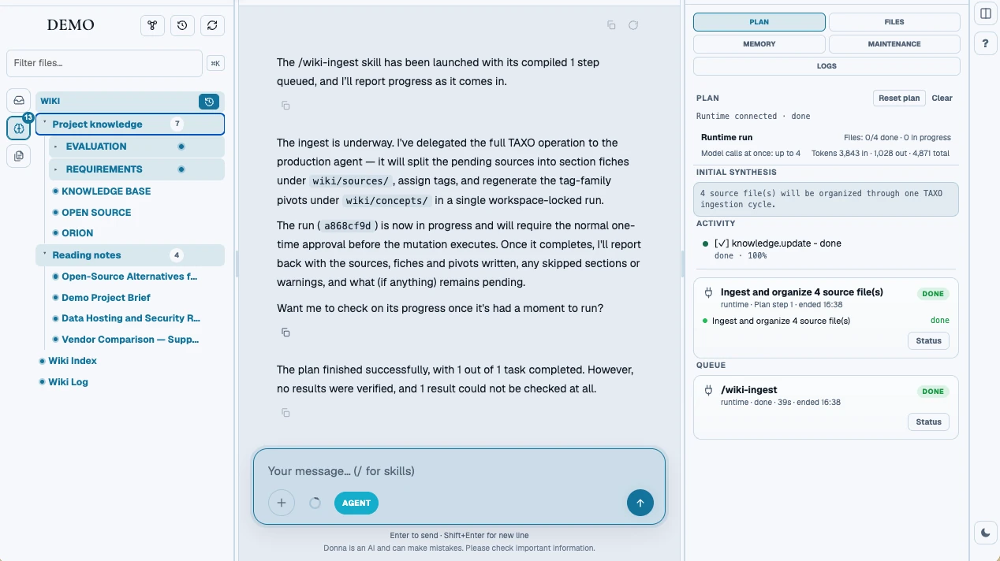
123
Donna · demo workspace · 16:38
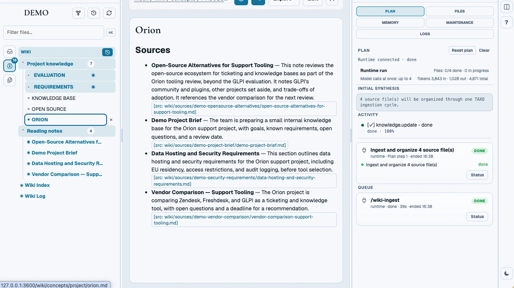
12
04Explore
See how the knowledge connects.
The graph shows the same wiki from above. In the families view, two families are linked when they share sources. Switch to concepts + sources and the graph turns bipartite: Orion is the most cited concept, tagged by all four documents. Clicking a source opens its context without leaving the graph.
1Project family: 1 concept, 4 sources
2Cross-family links, counted by shared sources
1Orion — cited by all four sources
2Source context, one click from the graph
Donna · demo workspace · 16:39
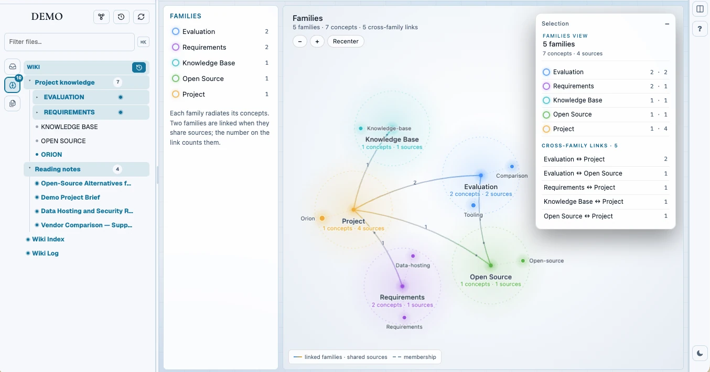
12
Donna · demo workspace · 16:39
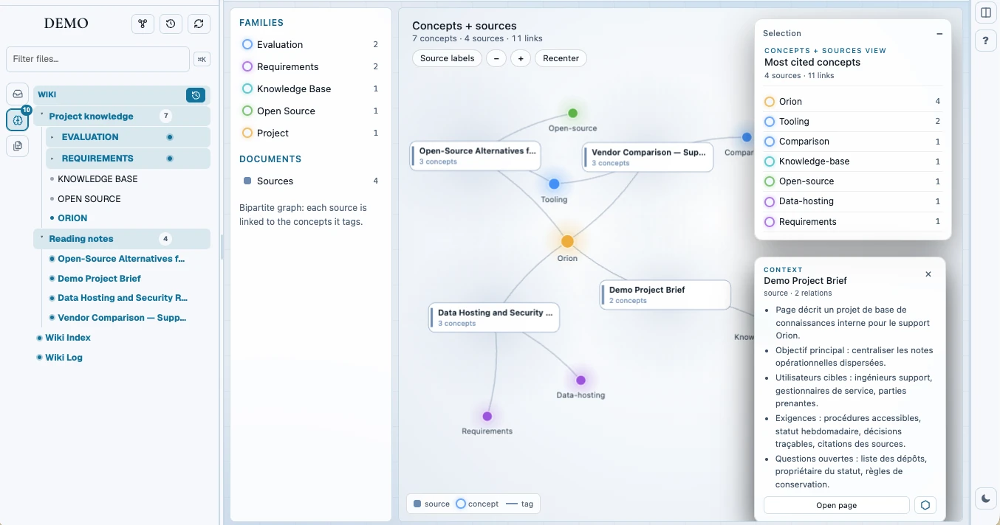
12
05Template
Write the deliverable once, as instructions.
A template is plain Markdown: headings, and one instruction per section. This one asks for a summary built from wiki context only, cited key facts, open questions — “if there are no documented gaps, say so” — and next steps that “do not invent commitments or decisions.”
1Each section carries its own instruction
2Guardrails written in the template itself
3Build turns the template into a deliverable
Donna · demo workspace · 16:40
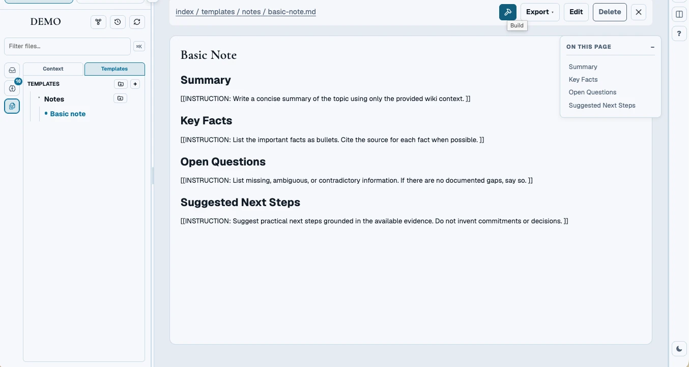
123
06Build
Build — approve once, then watch the agents work.
/wiki-build pairs the template with wiki context and the build rules. Same contract as the ingest: approval first. The execution view then projects the run as a graph — run, phase, task, output — with container load, agent and tokens beside it.
1/wiki-build templates/notes/basic-note.md
2Approval required before the deliverable is written
3Task detail: agent, duration, tokens, run journal
Donna · demo workspace · 16:41
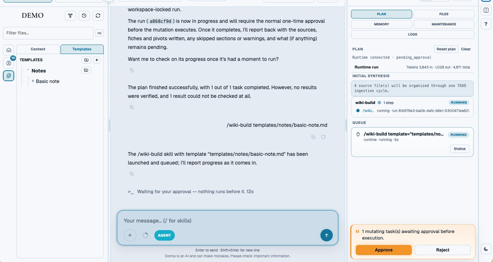
12
Donna · demo workspace · 16:41
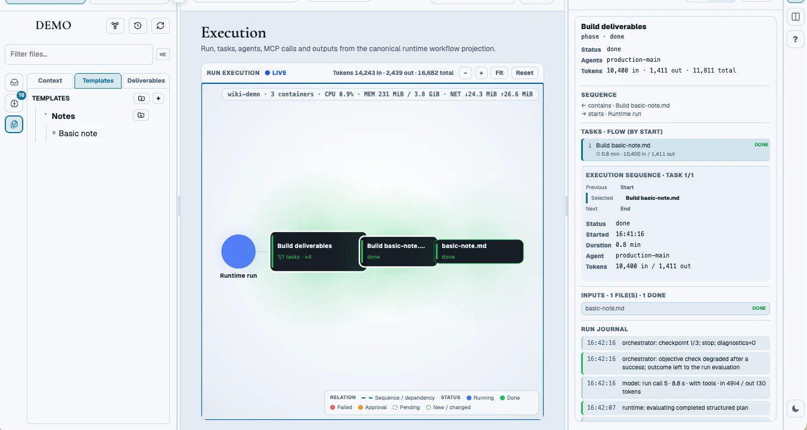
123
07Read
A note where every sentence has an address.
The deliverable reads like a normal note — summary, key facts, open questions, next steps — but each claim carries a [src: …] pointing to the source it came from. The three vendors, the EU-hosting constraint, the review date: each one traceable.
1Inline citation to the source fiche
2Sections follow the template
3Provenance opens the evidence behind the note
Donna · demo workspace · 16:42
123
08Prove
Provenance: from a paragraph down to a hash.
Provenance shows what the build actually used, frozen at build time: template and build context, the deliverable's sections, the source fiches they cite, and the archived raw files with line range and sha256. Here: 13 evidence chains, 4 fragments — exactly what the export relies on.
1Frozen evidence of this exact build
2Key Facts section: 4 proofs
3Source fiches the section cites
4Archived raw file — line range and sha256
Donna · demo workspace · 16:43
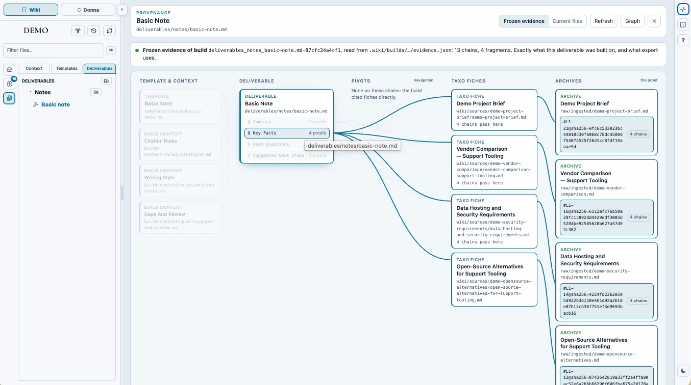
1234
09Deliver
Deliver the polished version.
/deliver publishes the note through the document.publish capability — after approval, once more. The polished export appears next to the build in Deliverables; the cited build stays alongside it as the reference.
1/deliver on the built note
2Polish run, live — with tokens and cancel
1Polished export, next to the cited build
2document.publish — done
Donna · demo workspace · 16:45
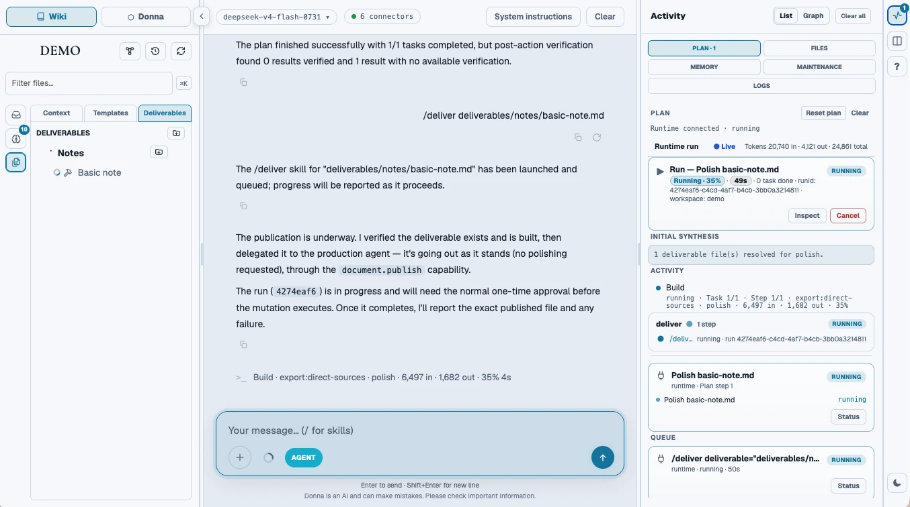
12
Donna · demo workspace · 16:45
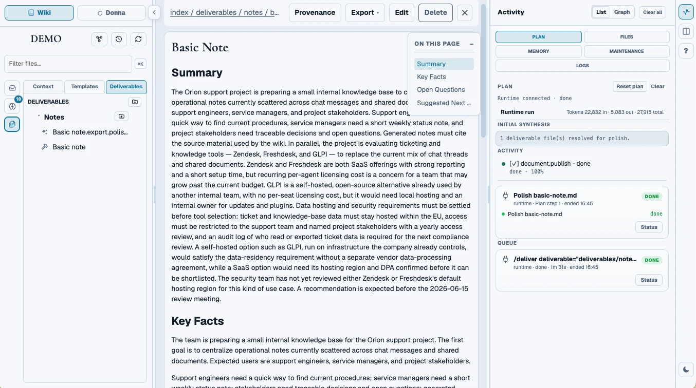
12
Then the sources move. Edit the brief, drop a new requirement, re-run the build: the note follows, and its provenance with it.
Donna follows the Karpathy pattern: useful AI systems are shaped by context, memory, tools and skills around the model. The model remains pluggable; the durable advantage is the knowledge layer and the procedures around it.
That is why Donna is presented as one product: a local application that gives agents grounded memory, traceable context and callable capabilities.
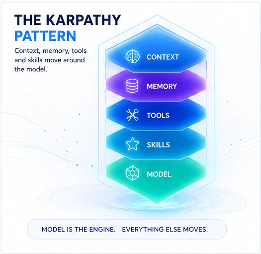
What Donna is
A product layer for living knowledge.
01
Wiki
A structured, searchable knowledge layer built from existing documents. Pages remain traceable back to their source, and the wiki can be exposed through MCP so other agents on the same machine can read from it.
02
Build
A build agent combines exactly three inputs — memory, context and a Markdown template — to regenerate a deliverable. When sources change, the user can regenerate instead of rewriting the same document by hand.
03
Pilot
A chat interface connects external MCP tools — local or remote — and reusable skills, then composes multi-step work in parallel, without asking the user to script each step manually.
Architecture
One local core. Multiple surfaces.
Sources enter from the left. In the center, Donna turns them into memory, context and buildable deliverables — orchestrating specialized agents in parallel. On the right, people and agents consume the result through multiple surfaces: a terminal cockpit, a web chat and a visual knowledge graph. The model provider is swappable underneath.
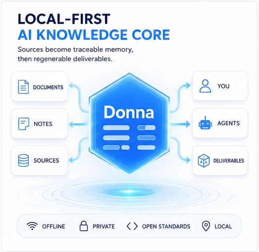
Functional diagram
Inputs, MCP calls and outputs — at a glance.
External sources and structural template / build-context / skills flow through internal and external MCP servers, local or remote — a replaceable toolbox you can extend with as many MCPs as you need — into a source-grounded wiki, all driven by an agentic, multi-model orchestrator that dispatches work across specialized agents in parallel.
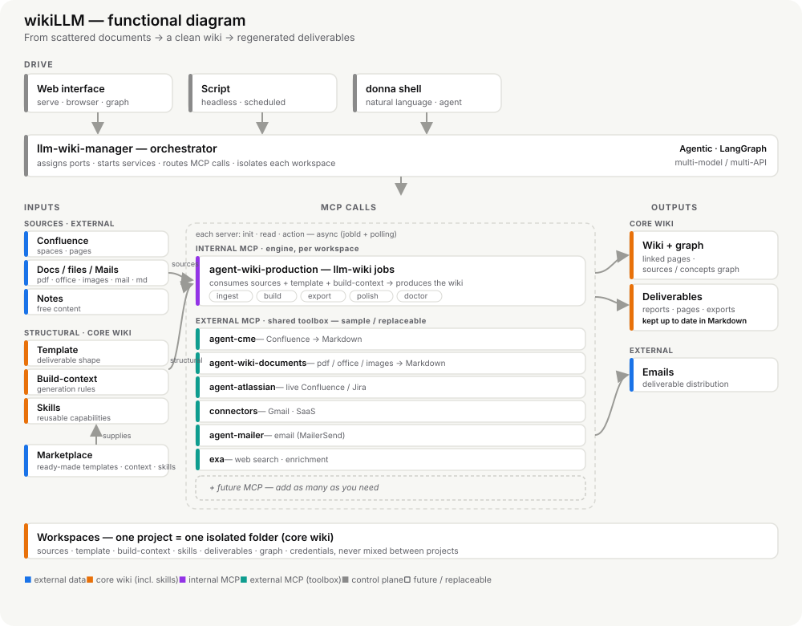
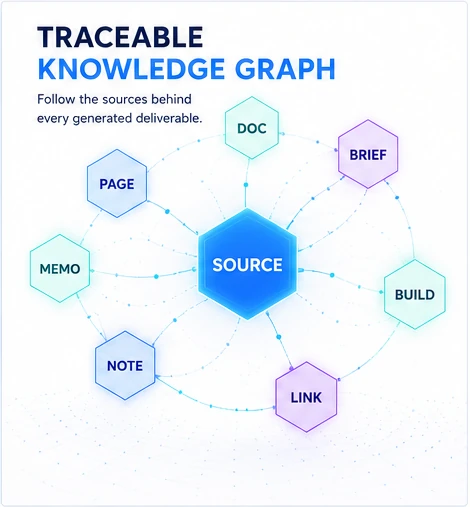
Graph view
See how knowledge connects.
The graph view makes the knowledge layer visible. It helps users inspect relationships between pages and sources, spot isolated content and understand where a deliverable gets its grounding.
For teams that need auditability, this is the difference between a black-box assistant and a navigable source-backed system.
Chat & orchestration
Let the agent compose the work.
The chat is not only a conversation surface. It is where MCP tools are connected, skills become reusable named procedures, and multi-step work is triggered without hand-written scripts.
The user stays in control while Donna reads, builds, checks and routes work across specialized agents in parallel — through any MCP tool, local or remote.
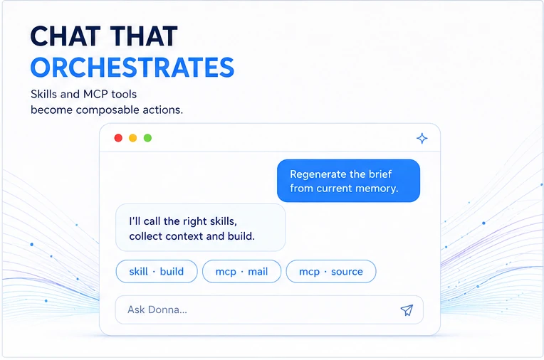
Harness integrations
Take Donna into the agent harness you already use.
Donna needs no desktop client. Where a team has approved one, its harness becomes another surface onto the same wiki, reached over MCP. The harness holds a connection profile, never a copy of the documents.
DonnaHARNESS
On DeepSeek Harness · plugin @dotdrelle/dsh-llm-wiki
One Harness Workspace per wiki.
Donna Harness is DeepSeek Harness with Donna inside. The llm-wiki plugin adds an Llm-wiki entry to the sidebar and an llm-wiki tab under Settings → Built-in plugins. From that tab you create one Harness Workspace per wiki: a name, the wiki MCP URL, its read token and the Serve URL. Each Harness Workspace stays bound to its own wiki, so two wikis never share an "active workspace".
Read-only by default. Search, pages, sources, graph, provenance and help come from an allow-list. A hidden write tool is refused even when the model calls it directly.
Grounded answers. Donna cites only pages she has opened, keeps wiki, web and attachment evidence apart, and says when coverage is incomplete.
Optional production.build, export and polish only, behind a separate write token and Harness's own confirmation.
The wiki beside the chat. The Llm-wiki entry opens the Serve web UI in the Harness sidebar browser, and document links open the rendered page.
Tokens stay out of the model. They are stored in owner-only files and never printed or passed to Donna.
A local MCP extension (.mcpb) and a Claude plugin carrying the llm-wiki skill. The extension finds every workspace in the wiki-manager registry: one install for all of them.
Local. It runs the engine on your machine and needs neither the ShellUI nor Serve.
Released with Donna. Its version follows each Donna release.
DeepSeek Harness also needs the per-workspace MCP loader in the same profile. On Ubuntu, install-deepseek.sh installs both plugins and creates the first workspace profile. It connects to an existing wiki server and does not deploy one.
Models
Bring the model that fits the job.
Donna is explicit about multi-provider execution: cloud models, OpenAI-compatible endpoints and local models can all fit the same product pattern.
Donna is not a SaaS and needs no server to host. It runs as a local Docker stack on your machine or your own infrastructure, with local indexes, local workspaces and optional local model execution — your data never leaves your environment.
For sensitive environments, the local-first model is not a footnote. It is the feature.
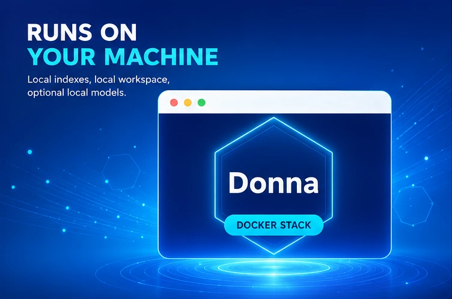
Start with your documents
Install Donna. Build from source-backed memory.
A practical path to AI deliverables that can say where they came from — and when the source is missing.